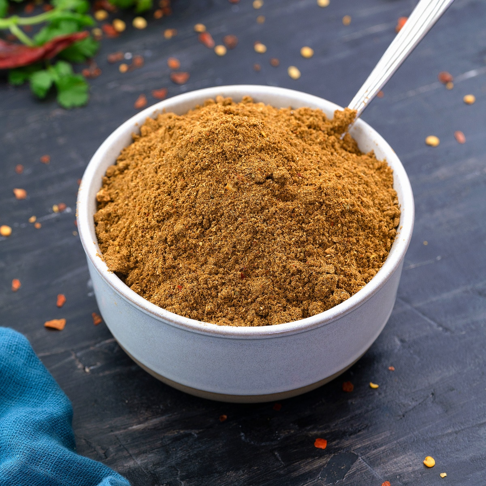

Garam Masala

Description
Makes approx 5 1/2 tbps
Garam Masala is an essential spice blend you should always have on hand, especially while creating Indian dishes, as they will almost always call for it. It mixes multiple aromatic spices to add a rich, warm depth to any dish. It has sweet and savory notes which compliments curries, stews, and other recipes.
Equipment Required:
- imperial measuring spoons
- storage container with lid
Ingredients:
- 1/2 tbsp ground coriander
- 1 1/2 tbsp ground cardimom
- 1 1/2 tbsp ground black pepper
- 1 tbsp ground cinnamom
- 1/2 tbsp ground cloves
- 1/2 tbsp ground nutmeg
Directions:
- Add all ingredients into storage container.
- Apply lid to container.
- Shake well to combine spices homogenously.
- Enjoy in recipes!